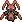

寶可夢 Wonderful
百科
繁中・非官方
原文
開始遊戲
首頁
指南
寶可夢
道具
招式
地圖
活動
道館與聯盟
系統
果園
經濟
公會
更新
常見問題
首頁
›
道具
› 翅粉
翅粉
Wing Dust
道具
蟲寶可夢翅膀上的細粉。可以賣給商店。
效果
從背包使用：「貴重物品。可以高價賣給友好商店。」
取得方式
任何友好商店都不販售。賣給友好商店可得
10
野生寶可夢掉落：
寶可夢
機率
數量
巴大蝶
10%
1
大針蜂
10%
1
派拉斯
10%
1
派拉斯特
10%
1
毛球
10%
1
摩魯蛾
10%
1
飛天螳螂
10%
1
凱羅斯
10%
1
芭瓢蟲
10%
1
安瓢蟲
10%
1
蜻蜻蜓
10%
1
巨鉗螳螂
10%
1
赫拉克羅斯
10%
1
狩獵鳳蝶
10%
1
毒粉蛾
10%
1
溜溜糖球
10%
1
雨翅蛾
10%
1
土居忍士
10%
1
鐵面忍者
10%
1
脫殼忍者
10%
1
電螢蟲
10%
1
甜甜螢
10%
1
圓法師
10%
1

音箱蟀
10%
1
結草貴婦
10%
1
紳士蛾
10%
1
三蜜蜂
10%
1
蜂女王
10%
1
遠古巨蜓
10%
1
 巴大蝶
巴大蝶 大針蜂
大針蜂 派拉斯
派拉斯 派拉斯特
派拉斯特 毛球
毛球 摩魯蛾
摩魯蛾 飛天螳螂
飛天螳螂 凱羅斯
凱羅斯 芭瓢蟲
芭瓢蟲 安瓢蟲
安瓢蟲 蜻蜻蜓
蜻蜻蜓 巨鉗螳螂
巨鉗螳螂 赫拉克羅斯
赫拉克羅斯 狩獵鳳蝶
狩獵鳳蝶 毒粉蛾
毒粉蛾 溜溜糖球
溜溜糖球 雨翅蛾
雨翅蛾 土居忍士
土居忍士 鐵面忍者
鐵面忍者 脫殼忍者
脫殼忍者 電螢蟲
電螢蟲 甜甜螢
甜甜螢 圓法師
圓法師 結草貴婦
結草貴婦 紳士蛾
紳士蛾 三蜜蜂
三蜜蜂 蜂女王
蜂女王 遠古巨蜓
遠古巨蜓